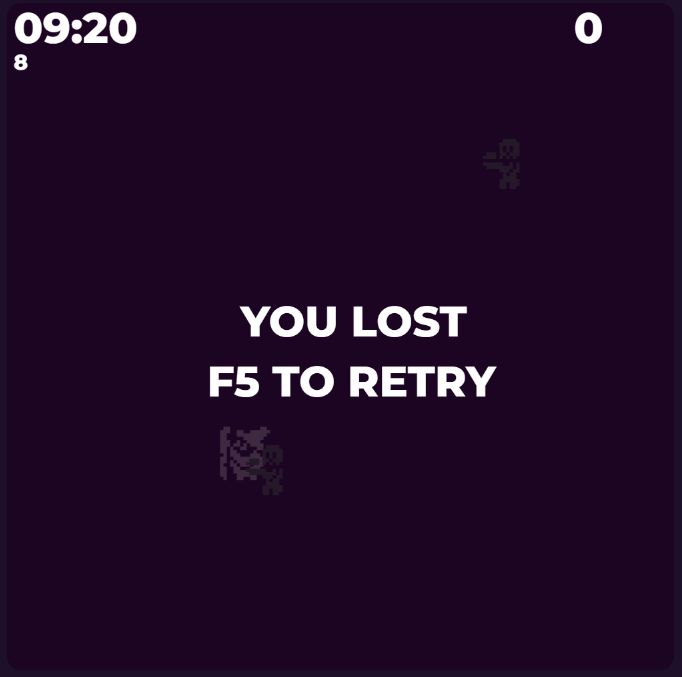
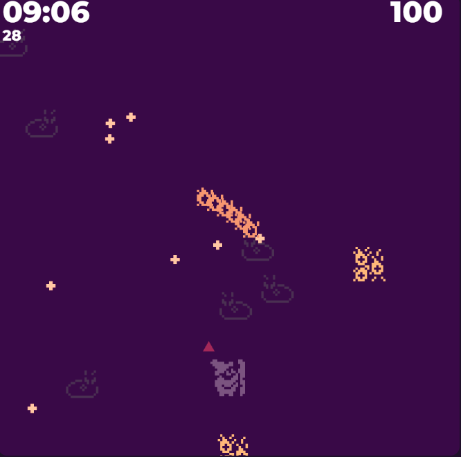
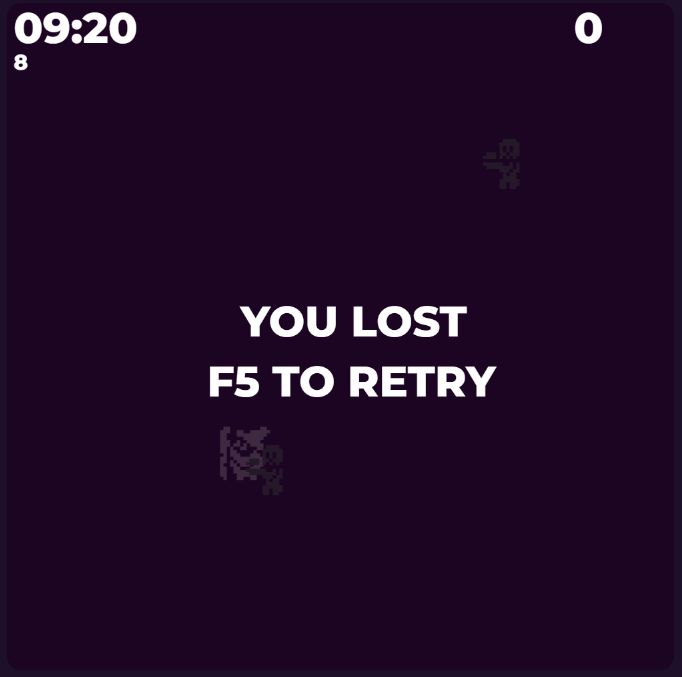
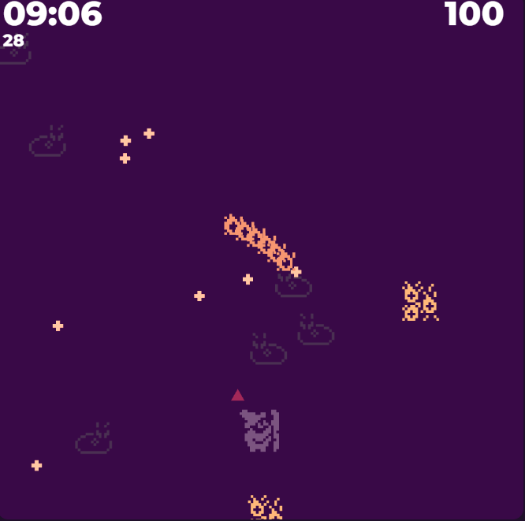

Practica 1 - WebGL
Introducció:
Amb l'objectiu de poder ensenyar els conexiaments apressos en les setmanes d'Introducció amb WebGL, s'ha requerit que es fes un projecte que utilitzes la majoria de components ensenyats a classe. Per fer aquest objectu d'una forma interessant he decidit en plantejar aquesta practica com la de recrear el exitós joc indie Zombie Survivors, a causa que crec que una simplificació d'aquest joc pot ser una bona base per poder ensenyar tots els coneixaments apresoss en classe.
Controls:
Disparar: Automatic
Moviemnt: Ratolí
Pausa: "P"
En aquest joc controles el personantge amb el ratolí, utilitzant la transformació de obtenir el
retoli en la possició web i utilitzar transformacións perque els cordenades estiguin en el sistema
del canvas on hi ha els elements del WebGL.
El jugador dispararà de manera automatica donades les teves estadistiques.
Objectiu:
Hauras de derrotat totes les hordes de monstres que probenen de les cantonades del joc, tant els monstres com tú estan representats amb un "pixel-art", però a causa que el WebGL no treballa directament amb quadrats, el que es fa és representar cada quadrat amb dos triangles, però si es fés això cada personatge utilitzaria molts recursos, per això el que es fà es que si hi ha una regio rectangular de pixels s'agruparant per només utilitzar 2 poligons. Les bales, estàn representades amb cercle, que tampoc és un element basic que dona WebGL, per això es va fer una funció que intenta donar els vertex necessaris per generar un cercle, per això un dels parametres serà amb quants vertex vols aproximar el cercle, on 3 seria un triangle, 4 seria un quadrat, i aixì continuament fins obtenir un poligon regular que amb la mida sigui percebut com un cercle.
Implementacions especifiques:
A causa que en algun punt poden haver molts elements en pantalla, una aproximació al moviment que es basi en moure el buffer de vertex pot ser molt costosa, degut al alt nombre de operacions que s'haurien de realitzar en cada cicle. Per això es va optar en aquest cas a que cada element tingues el seu vector de posició i que li comuniqués des de la classe logica a la classe que el representa gaficament aquest vector de posició, amb l'objectiu de passar aquest vector a la varible "pOffset" del shader, reduint així el nombre de computacions.
 


